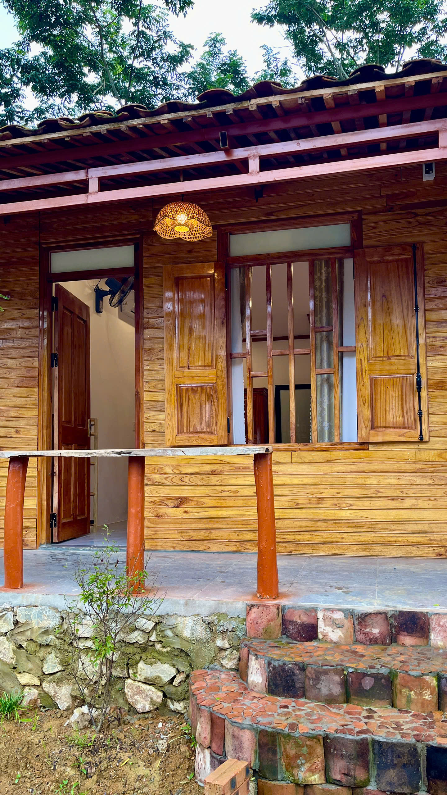

HOMESTAY BẮC SƠN
Homestay Bắc Sơn – Gợi ý nơi lưu trú khi khám phá Quỳnh Sơn
Khi tìm kiếm một nơi lưu trú để khám phá Bắc Sơn, nhiều du khách không chỉ quan tâm đến chỗ nghỉ, mà còn muốn có thêm thời gian để cảm nhận cảnh quan, văn hóa và nhịp sống của địa phương.
Quỳnh Sơn là một lựa chọn phù hợp cho hành trình đó, với không gian làng bản Tày, những ngôi nhà sàn truyền thống và cảnh quan đặc trưng của thung lũng Bắc Sơn.

Homestay Bắc Sơn nên có những gì?
Một homestay Bắc Sơn phù hợp cho chuyến đi thường không chỉ là nơi để ngủ qua đêm. Với những người muốn khám phá Quỳnh Sơn và Bắc Sơn chậm rãi hơn, một nơi lưu trú gần không gian làng bản sẽ giúp hành trình có thêm thời gian trải nghiệm.
Du khách có thể ưu tiên những nơi mang lại cảm giác gần gũi với đời sống địa phương, có không gian nghỉ ngơi phù hợp và thuận tiện để kết hợp với các điểm tham quan trong khu vực.
Vì sao nên lưu trú tại Quỳnh Sơn khi đi Bắc Sơn?
Quỳnh Sơn nằm trong không gian du lịch cộng đồng của Bắc Sơn, nơi du khách có thể tìm hiểu đời sống và văn hóa của cộng đồng người Tày. Những ngôi nhà sàn truyền thống, cảnh quan làng quê và nhịp sống bình dị tạo nên một trải nghiệm khác với việc chỉ ghé Bắc Sơn trong ngày.
Từ Quỳnh Sơn, du khách có thể dành thời gian khám phá cảnh quan Bắc Sơn, tìm hiểu văn hóa Tày, thưởng thức ẩm thực địa phương và cảm nhận không gian bản làng.

Dương Gia Đạt Homestay tại Quỳnh Sơn
Dương Gia Đạt Homestay là một điểm lưu trú tại Quỳnh Sơn, dành cho du khách muốn có thêm thời gian trải nghiệm không gian làng bản và khám phá Bắc Sơn.
Không gian lưu trú tại đây gắn với hình ảnh nhà sàn và đời sống bản làng Quỳnh Sơn. Đây cũng là điểm dừng chân để du khách tiếp tục hành trình tìm hiểu văn hóa Tày, cảnh quan và những trải nghiệm đặc trưng của khu vực.
Nếu bạn đang tìm homestay Bắc Sơn cho chuyến đi cùng gia đình, bạn bè hoặc nhóm nhỏ, có thể xem trước các không gian lưu trú và lựa chọn hình thức nghỉ phù hợp với nhu cầu của mình.
Kinh nghiệm chọn homestay Bắc Sơn
Trước khi đặt phòng, du khách nên xác định số người đi cùng, thời gian lưu trú và mong muốn chính của chuyến đi. Nếu mục tiêu là khám phá văn hóa và cảnh quan địa phương, việc chọn một nơi lưu trú tại khu vực Quỳnh Sơn có thể giúp hành trình thuận tiện hơn.
Ngoài ra, nên liên hệ trước với homestay để trao đổi về phòng nghỉ, thời gian nhận phòng, nhu cầu ăn uống và các thông tin cần thiết cho chuyến đi. Việc chuẩn bị trước giúp lịch trình rõ ràng hơn, đặc biệt khi đi theo nhóm hoặc gia đình.
Kết hợp lưu trú và khám phá Quỳnh Sơn
Một chuyến đi Bắc Sơn không nhất thiết phải chỉ tập trung vào việc tham quan. Khi dành thời gian lưu trú tại Quỳnh Sơn, du khách có thể kết hợp nghỉ ngơi với việc tìm hiểu nhà sàn, văn hóa Tày, ẩm thực địa phương và cảnh quan xung quanh.
Nếu muốn tìm hiểu kỹ hơn về điểm đến, bạn có thể xem thêm bài viết Du lịch Quỳnh Sơn để có thêm thông tin trước khi lên kế hoạch.
Lưu trú tại Bắc Sơn và tận hưởng chuyến đi chậm hơn
Một nơi nghỉ phù hợp có thể giúp chuyến đi Bắc Sơn trở nên thoải mái hơn. Thay vì chỉ ghé qua trong thời gian ngắn, du khách có thể dành thêm thời gian để quan sát cuộc sống bản làng, thưởng thức không gian yên bình và khám phá Quỳnh Sơn theo nhịp độ riêng.
Với những ai đang tìm kiếm homestay Bắc Sơn, Dương Gia Đạt Homestay tại Quỳnh Sơn là một lựa chọn để tham khảo khi lên kế hoạch cho hành trình khám phá Bắc Sơn, Lạng Sơn.
Hẹn gặp bạn tại Quỳnh Sơn
Hãy đến Dương Gia Đạt Homestay để nghỉ ngơi, khám phá Quỳnh Sơn và trải nghiệm không gian bình dị giữa thung lũng Bắc Sơn.